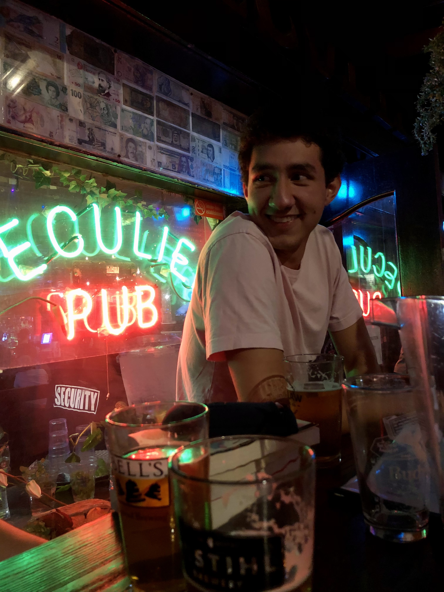
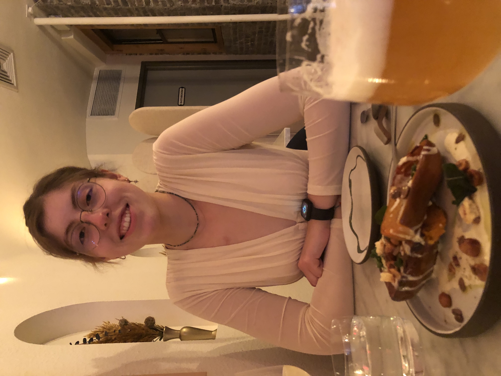

ABOUT US
Jaime is our vegan expert who contributes to Faux Foodies... when he's not too busy questioning the philosophy of language and publishing papers. Recently he has also started checking if wine is vegan before buying it. He is always down for a whoopie pie.
Lucas (chief writer of Aromas & Atmospheres) is your go-to for any food-related spot, anywhere in New York. Are you deep in Brooklyn? Worry not, he'll have something pinned on Google Maps for you to try. He doesn't always know how these pins get pinned, but hey, he has them. A donut guy at heart.
Isabel has an intense passion for pesto sauce. She recently ate an entire pumpkin pie in one day. She strives to be a web design "unicorn", so she works hard at designing our website and maintaining it. Carrot cake is the way to go for her, and she will buy herself some on her birthday.
